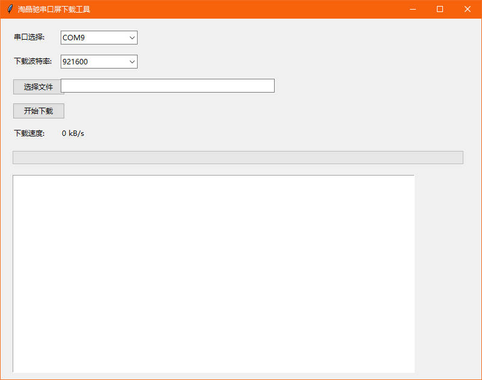

python实现的下载工具

import tkinter as tk
from tkinter import ttk, filedialog
import serial
import serial.tools.list_ports
import threading
import time
import os
from datetime import datetime
class TJCDownloadTool(tk.Tk):
def __init__(self):
super().__init__()
self.title("淘晶驰串口屏下载工具")
self.geometry("800x600")
# 串口相关变量
self.serial_port = None
self.connect_baud = 0
self.download_baud = 921600
self.connecting = False
self.downloading = False
self.transferred = 0
self.last_update = time.time()
self.speed = 0
# 创建界面组件
self.create_widgets()
self.scan_serial_ports()
def create_widgets(self):
# 串口选择
ttk.Label(self, text="串口选择:").place(x=20, y=20)
self.port_combobox = ttk.Combobox(self, width=15)
self.port_combobox.place(x=100, y=20)
# 波特率选择
ttk.Label(self, text="下载波特率:").place(x=20, y=60)
self.baud_combobox = ttk.Combobox(self, width=15, values=[
2400, 4800, 9600, 19200, 38400, 57600,
115200, 230400, 256000, 512000, 921600
])
self.baud_combobox.set(921600)
self.baud_combobox.place(x=100, y=60)
# 文件选择
self.file_btn = ttk.Button(self, text="选择文件", command=self.select_file)
self.file_btn.place(x=20, y=100)
self.file_path = ttk.Entry(self, width=50)
self.file_path.place(x=100, y=100)
# 下载按钮
self.download_btn = ttk.Button(self, text="开始下载", command=self.start_download)
self.download_btn.place(x=20, y=140)
# 下载速度显示
ttk.Label(self, text="下载速度:").place(x=20, y=180)
self.speed_label = ttk.Label(self, text="0 kB/s")
self.speed_label.place(x=100, y=180)
# 进度条
self.progress = ttk.Progressbar(self, orient=tk.HORIZONTAL, length=750, mode='determinate')
self.progress.place(x=20, y=220)
# 日志文本框
self.log_text = tk.Text(self, width=95, height=25)
self.log_text.place(x=20, y=260)
def scan_serial_ports(self):
ports = sorted(serial.tools.list_ports.comports(), key=lambda p: p.device, reverse=True)
self.port_combobox['values'] = [p.device for p in ports]
if ports:
self.port_combobox.set(ports[0].device)
def select_file(self):
path = filedialog.askopenfilename(filetypes=[("TFT files", "*.tft")])
if path:
self.file_path.delete(0, tk.END)
self.file_path.insert(0, path)
def log(self, message):
self.log_text.insert(tk.END, f"[{datetime.now().strftime('%H:%M:%S')}] {message}\n")
self.log_text.see(tk.END)
def update_speed(self):
if self.downloading:
now = time.time()
elapsed = now - self.last_update
if elapsed > 0:
self.speed = (self.transferred / elapsed) / 1024
self.speed_label.config(text=f"{self.speed:.1f} kB/s")
self.last_update = now
self.transferred = 0
self.after(1000, self.update_speed)
def start_download(self):
if not self.downloading:
self.downloading = True
self.transferred = 0
self.last_update = time.time()
self.download_btn.config(text="正在联机...")
self.progress['value'] = 0
self.after(1000, self.update_speed)
threading.Thread(target=self.download_process).start()
def download_process(self):
port = self.port_combobox.get()
file_path = self.file_path.get()
if not port or not file_path:
self.log("请先选择串口和文件")
self.reset_btn()
return
try:
# 尝试联机
self.log("开始联机...")
connect_bauds = [9600, 115200, 19200, 38400, 57600,
230400, 256000, 512000, 921600, 4800, 2400]
for baud in connect_bauds:
self.log(f"尝试 {baud} 波特率...")
try:
with serial.Serial(port, baud, timeout=0.1) as ser:
connect_cmd = bytes.fromhex(
"44 52 41 4B 4A 48 53 55 59 44 47 42 4E 43 4A 48 47 4A 4B 53 48 42 44 4E FF FF FF 00 FF FF FF 63 6F 6E 6E 65 63 74 FF FF FF"
)
ser.write(connect_cmd)
time.sleep((1000000 / baud + 30) / 1000)
response = ser.read(1024)
if b'comok' in response:
self.connect_baud = baud
self.log(f"联机成功! 波特率: {baud}")
self.log(f"设备响应: {response.decode(errors='ignore')}")
break
except Exception as e:
continue
if not self.connect_baud:
self.log("联机失败!")
self.reset_btn()
return
# 开始下载
self.download_btn.config(text="正在下载...")
self.send_download_command(port, file_path)
except Exception as e:
self.log(f"发生错误: {str(e)}")
finally:
self.reset_btn()
def send_download_command(self, port, file_path):
try:
# 获取文件大小
file_size = os.path.getsize(file_path)
download_baud = int(self.baud_combobox.get())
self.progress['maximum'] = file_size
# 发送whmi-wri指令
with serial.Serial(port, self.connect_baud) as ser:
cmd = f"whmi-wri {file_size},{download_baud},0".encode()
ser.write(cmd + b'\xff\xff\xff')
time.sleep(0.35)
# 切换波特率
ser.baudrate = download_baud
response = ser.read(1)
if response != b'\x05':
self.log("设备未响应准备信号")
return
# 发送文件数据
self.log("开始传输文件...")
with open(file_path, 'rb') as f:
while True:
chunk = f.read(4096)
if not chunk:
break
ser.write(chunk)
self.transferred += len(chunk)
self.progress['value'] += len(chunk)
# 等待响应
while True:
resp = ser.read(1)
if resp == b'\x05':
break
self.log("文件传输完成!")
except Exception as e:
self.log(f"下载失败: {str(e)}")
def reset_btn(self):
self.downloading = False
self.connect_baud = 0
self.download_btn.config(text="开始下载")
self.progress['value'] = 0
self.speed_label.config(text="0 kB/s")
if __name__ == "__main__":
app = TJCDownloadTool()
app.mainloop()
相关链接